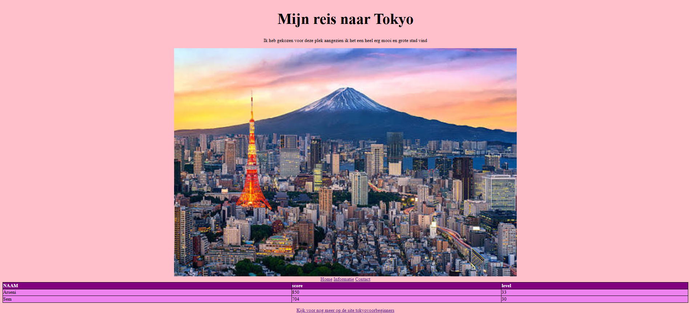
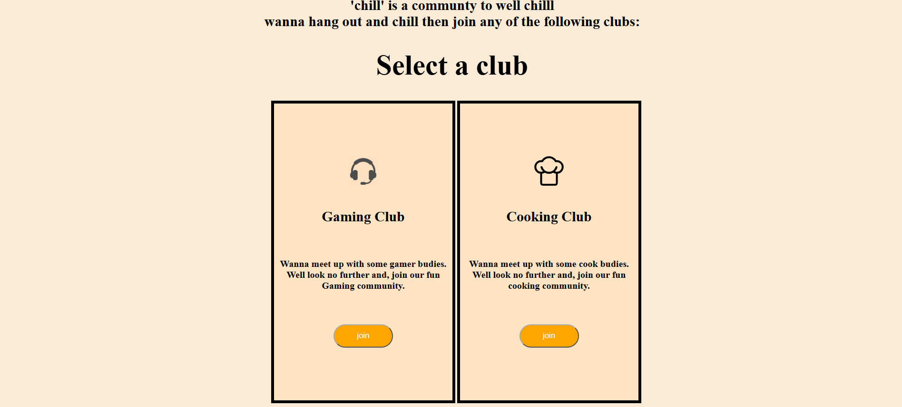

Websites (html en css)
Met html en css heb ik op mijn opleiding websites gemaakt een van die websites is natuurlijk dit project. daarnaast heb ik ook zelf vroeger een project gemaakt met html en css hier had ik de basis geleerd voor deze programmeer talen.
Hier onder zie je een paar screenshots van de sites die ik heb gemaakt dit is hoe ik de basis van deze talen en heb geleerd en deze kennis heb ik toegepast bij het maken van deze website (mijn Portfolio).

